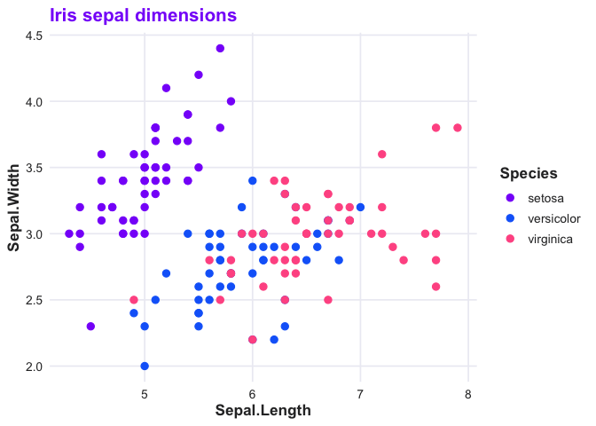

spellbind is the RLadies+ brand toolkit for R. It gives you colour palettes, a ggplot2 theme, colour/fill scales, and branded R Markdown templates so that everything your chapter produces looks like it belongs together.
Installation
Install from the RLadies r-universe:
install.packages("spellbind", repos = "https://rladies.r-universe.dev")Or the development version from GitHub:
# install.packages("pak")
pak::pak("rladies/spellbind")Colours
The brand palette has three primary colours — purple, blue, and rose — plus neutrals and tints for each.
library(spellbind)
rladies_cols("purple", "blue", "rose")
#> purple blue rose
#> "#881ef9" "#146af9" "#ff5b92"ggplot2 theme and scales
theme_rladies() pairs with scale_colour_rladies() and scale_fill_rladies() to give plots a consistent branded look.
library(ggplot2)
ggplot(iris, aes(Sepal.Length, Sepal.Width, colour = Species)) +
geom_point(size = 2.5) +
scale_colour_rladies() +
theme_rladies() +
labs(title = "Iris sepal dimensions")
Eight palettes are available — "main", "full", "purple", "blue", "rose", "neutral", "diverging", and "light". See ?rladies_pal for details.
R Markdown templates
Three branded templates ship with the package, available from RStudio’s File > New File > R Markdown > From Template menu:
-
RLadies+ HTML —
spellbind::rladies_html -
RLadies+ PDF —
spellbind::rladies_pdf - RLadies+ Xaringan — slide deck with brand CSS